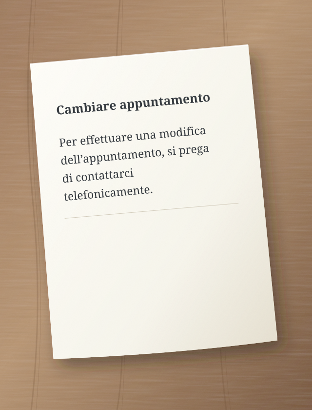
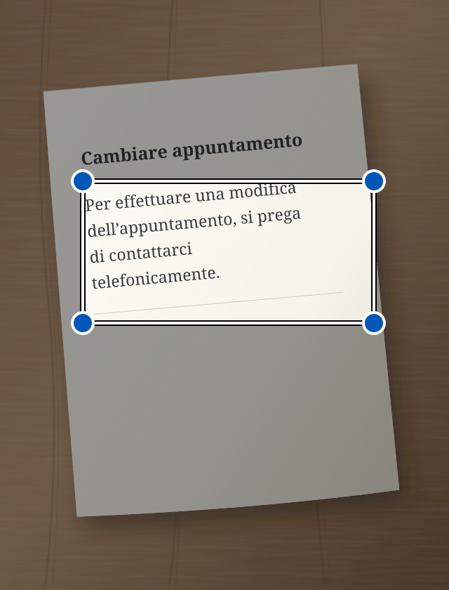

Una lettera ufficiale, un messaggio lungo, istruzioni complicate. Sedno ti aiuta a capirli con parole più semplici. Può anche correggere il tuo testo e leggerlo ad alta voce.
Per effettuare una modifica dell’appuntamento, si prega di contattarci telefonicamente.
↳ Testo semplificato
Vuoi cambiare l’appuntamento? Chiamaci.
Esempio illustrativo di semplificazione.
Capire meglio. Agire più facilmente.
Il linguaggio semplice è per tutti.
Stiamo creando Sedno soprattutto per le persone con difficoltà uditive e per chi fatica a capire testi complessi. Parole più semplici possono aiutare tutti noi.
Dalle parole al significato
Due semplici passaggi.
01
Aggiungi il testo
Scrivi, incolla, scatta una foto o parla.
02
Semplifica o correggi
Scegli ciò che ti serve. Il risultato appare nello stesso campo. Puoi continuare a modificarlo.
i L’IA può sbagliare. Controlla le informazioni importanti nell’originale.
Guarda dove premere
Sedno, passo dopo passo.
Ogni esempio mostra un’attività. Il cerchio indica dove premere. La freccia mostra cosa succede dopo.
Questi sono disegni semplificati delle schermate. I testi sono esempi. L’app potrebbe avere un aspetto leggermente diverso.
Semplifica un testo scritto
Un messaggio difficile? Scrivilo o incollalo in Sedno.
1 Scrivi il testo e premi «Semplifica».
Controlla che sia scelta la modalità Semplifica.
Sedno – semplifica testo:
Per effettuare una modifica dell’appuntamento, si prega di contattarci telefonicamente.
Semplifica
2 Leggi il testo più semplice.
Il risultato appare nello stesso campo. Puoi modificarlo.
Testo semplificato
Vuoi cambiare l’appuntamento? Chiamaci.
L’IA può sbagliare
Semplifica
Semplifica il testo di una foto
Una lettera su carta? Scatta una foto in Sedno.
1 Premi la fotocamera.
Si apre la fotocamera dell’app.
Sedno – semplifica testo:
Scrivi o incolla un testo
Semplifica
2 Premi «Scatta foto».
Tieni il telefono in modo che l’intera pagina e il testo siano nitidi.
Fotografa un testo

Scatta foto
3 Seleziona il testo e premi «Semplifica».
Sposta gli angoli della cornice intorno al testo da semplificare.
Seleziona il testo
Sposta gli angoli del riquadro per selezionare il testo.

Semplifica
4 Leggi il testo più semplice.
Sedno legge il testo dalla foto e lo semplifica.
Testo semplificato
Vuoi cambiare l’appuntamento? Chiamaci.
L’IA può sbagliare
Semplifica
La foto resta sul telefono. All’IA viene inviato solo il testo riconosciuto. Se la semplificazione non riesce, il testo resta nel campo e puoi modificarlo.
Semplifica il parlato
Preferisci parlare invece di scrivere? Scegli la modalità Semplifica.
1 Premi il microfono.
Se il telefono chiede l’accesso al microfono, consentilo.
Sedno – semplifica testo:
Scrivi o incolla un testo
Semplifica
2 Pronuncia il testo ad alta voce.
Parla nella lingua scelta. Fai una breve pausa alla fine.
Parla nella lingua scelta
Sedno trasforma la voce in testo.
3 Leggi il testo più semplice.
Dopo 1,5 secondi di silenzio, Sedno semplifica automaticamente il testo riconosciuto.
Testo semplificato
Vuoi cambiare l’appuntamento? Chiamaci.
L’IA può sbagliare
Semplifica
Il parlato viene riconosciuto sul telefono. Servono Android 13 o successivo, un dispositivo compatibile e un modello scaricato per la lingua scelta. La registrazione dura al massimo un minuto. Stop annulla la registrazione.
Correggi un testo scritto
Vuoi correggere il tuo messaggio? Scegli la modalità Correggi prima di scrivere.
1 Scrivi il testo e premi «Correggi».
Cambia modalità con le frecce sopra il pulsante grande.
Sedno – correggi testo:
domani non posso venire ala riunione
Correggi
2 Leggi il testo corretto.
Sedno corregge gli errori. Controlla che il testo dica ciò che intendi.
Testo corretto
Domani non posso venire alla riunione.
L’IA può sbagliare
Correggi
Ascolta il testo corretto
In modalità Correggi, il telefono può leggere ad alta voce il testo nel campo.
1 Premi l’altoparlante.
Prima correggi il testo. Poi premi l’altoparlante a sinistra.
Testo corretto
Domani non posso venire alla riunione.
L’IA può sbagliare
Correggi
2 Ascolta il testo.
Il telefono legge ad alta voce. Il pulsante stop interrompe la lettura.
Il telefono legge ad alta voce
Ascolta il testo dal tuo telefono.
La lettura avviene sul telefono. Scarica una voce offline per la lingua scelta nelle impostazioni del telefono.
Lingua
Scegli la tua lingua.
Sedno supporta 13 varianti linguistiche. Nell’app, apri il menu e scegli Lingua. La scelta vale anche per testo, dettatura e lettura. Sedno semplifica e corregge; non traduce tra lingue.
I tuoi testi. Il tuo controllo.
Riservatezza fin dall’inizio.
Foto e audio restano sul telefono. Solo il testo viene inviato all’IA.
Il testo delle foto viene riconosciuto sul dispositivo. La foto non viene inviata.
L’audio resta con te
Il telefono riconosce la voce e legge il testo localmente. Sedno non invia audio al proprio server né a OpenAI. Solo il testo riconosciuto viene inviato per la semplificazione.
L’IA elabora il testo
Il testo da semplificare o correggere passa dal server a OpenAI. Il server Sedno non ne salva il contenuto.
Cronologia per 7 giorni
La cronologia cifrata resta solo sul dispositivo per 7 giorni. Puoi eliminarla prima. Uscire dall’account cancella la cronologia dal telefono.
Sedno
Parole più vicine alle persone.
L’app è in fase di test. Il link per scaricare l’app sarà disponibile qui dopo il lancio.